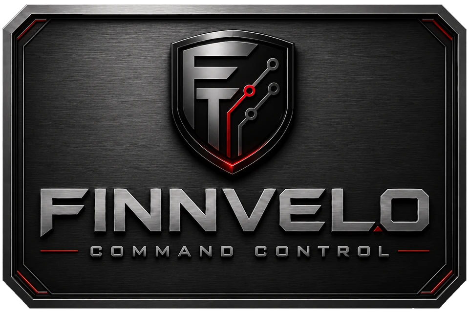
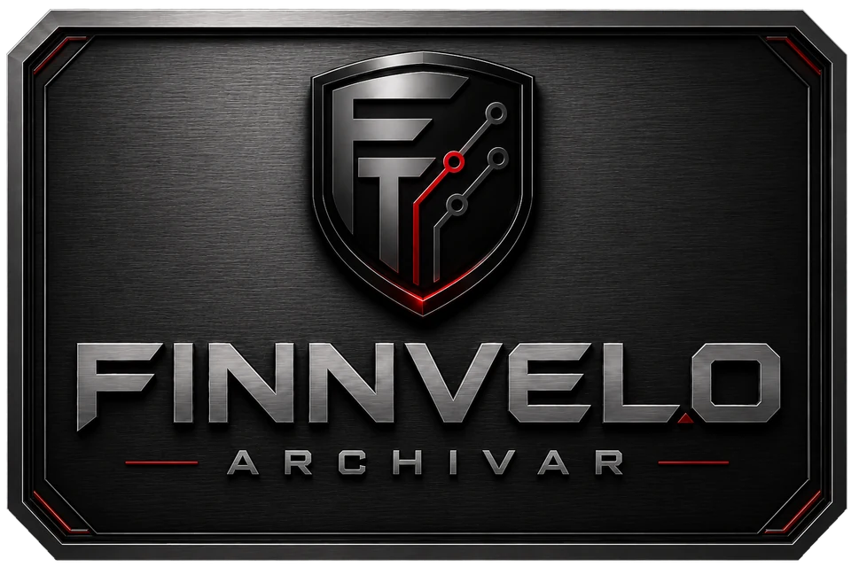
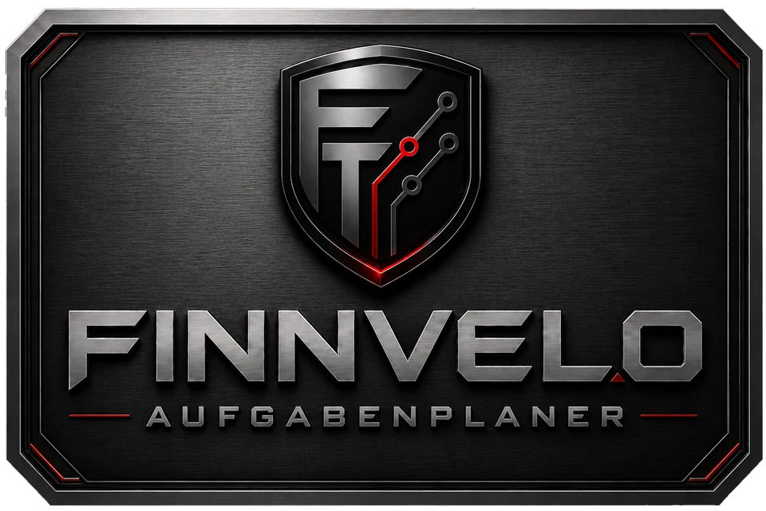
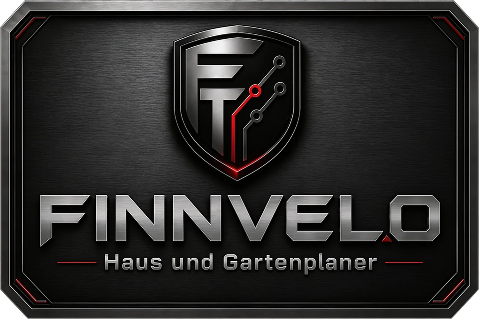

Software · Automatisierung · Produktivität
Finnvelo
Programmwelten.
Programmübersicht
Wähle ein Programm aus. Jede Programmfläche führt direkt zur eigenen Programmseite mit Beschreibung und späterem Downloadbereich.
Direkt im Browser
Zwei Programme brauchen gar keinen Download: der Haus- und Gartenplaner (3D-Planung für Räume, Möbel und Garten) und der Mischwaldrechner (Punkte zählen für das Brettspiel Mischwald). Beide findest du oben im Menü unter Web-Apps.

Finnvelo Command Control Zentrale Programmsteuerung für Programme, Shortcuts, Arbeitsbereiche und wiederkehrende Abläufe.
Finnvelo Archivar Archivierungsprogramm für Dateien, Ordner, ZIP-Archive und strukturierte Ablage. In Entwicklung Finnvelo Finanzmanager Haushaltsbuch und Finanzübersicht für Einnahmen, Ausgaben, Kategorien und Planung.
In Entwicklung Finnvelo Aufgabenplaner Kleiner Tagesmanager für Aufgaben, Prioritäten und produktive Arbeitsorganisation. In Entwicklung Finnvelo Medienstudio Kamera-, Bild- und Videobearbeitungsbereich für spätere Medienwerkzeuge.
Web-App · direkt im Browser Finnvelo Haus und Gartenplaner 3D-Planer für Räume, Möbel und Garten - direkt im Browser nutzbar, zusätzlich als Windows-Programm. Web-App · zusätzlich als Android-App
Finnvelo Mischwaldrechner
Auswertung für das Kartenspiel Mischwald: Punkte zusammenzählen, Rechenweg, Fotomodus und Kartenübersicht.
Web-App · zusätzlich als Android-App
Finnvelo Mischwaldrechner
Auswertung für das Kartenspiel Mischwald: Punkte zusammenzählen, Rechenweg, Fotomodus und Kartenübersicht.